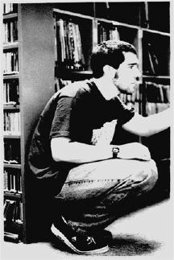

|
 | "There's a sense of community and it's getting better." |
|
Right now I’m a junior at UNC, as a psychology B.S. major. I’ll probably have 2
more years here. I’m an R.A., so I work at that, doing those sort of things. Also I work
at computer labs on campus and as an usher for the student union. During the summer
I’m a camp counselor. It's a small group camp, focusing on group building as opposed
to athletic ability. I blow all my money on CDs but I like to camp a lot and read. And
hang out with people - I’ve made a hobby out of it. It's beyond just recreation.
I came to school and started listening to college radio more and in the spring of 1995, I knew that they were looking for DJ's. So I went over there to just test the waters and I met a couple people...They just seemed very receptive and very hospitable, and I just thought "This is a cool place to be." So I asked about getting trained and did that process. I liked how they did it a lot. I felt that it was a merit-based thing...I definitely felt how they did it - trained you first, and then turned in your tape and passed the FCC test - based on that was whether you got a shift, not some sort of subjective interview process...A lot of college stations think that how they're going to hire people is going to be based on their willingness to learn about new music, but also based on the pool that they're going to be drawing from. And then it can often go to who you now or just if you have an impressive amount of knowledge about college radio to begin with. I feel that [WXDU] really guided you and led you, while still giving you the creativity to express yourself musically I guess. In the fall here at UNC, I went over to XYC because of course it was closer. They had an interview thing. I know a lot of people go through the process a couple of times before they ever get a show. I can respect what they're doing, but on the other hand, I didn't like it as much. So when I forgot to sign up for an interview in the spring, I thought, well I don’t want to wait and XDU is looking for people. So that's when I went over there, found out how they did it, and liked it better. I started it in the fall of 1995...Monday nights 2-5 am - and it was actually not a bad shift because I didn't have class until 2 on Tuesday. And so I could do that no problem. I had fun doing it. It was actually a really good learning experience because going in there with three hours of music to play, I just learned a lot of names, learned a lot about styles of music that I was gong to like and related sounds and artists. I got to explore without really turning off the audience in any significant sort of way. [My musical knowledge] was eclectic in the sense of liking all varieties of genres. But it wasn’t that deep I guess. It was more folk-based. And now my knowledge of folk musics, not just typical types of folk music, like Woody Guthrie or something like that, but be it from Kwali singers to your different types of bluegrass to blues to your early forms of soul. That's all gotten bigger. I started looking at how music developed in America, specifically. So I would try to do music sets that reflected that. You’d learn a lot going from say jazz to a swing song to a ska song, back to a rock song. Or how country influenced the rock music we have today...I would just take an artist that I knew and find a band that he was in with someone else, or she was in with someone else, and then find a band that someone in that band was with. And just listen to how the styles shifted. There's something that's more accessible to XDU, but without compromising the value of using college radio as an educational tool and not just playing music that you can hear elsewhere. Maybe it goes back to the different station policies. XDU's, as far as I understand, is to recognize underrated artists and with the education mindset. And XYC's is "music of the twentieth century." I think they both give you a lot of room, but it's about the emphasis of segues in training. I don't think the average duke student is up in arms about it... I don't think people, really, if they thought about it would begrudge how it fits in. I think anyone who thinks about it sees how it fits in. Just cause the sort of people who wouldn’t like the station, who want it to be more of a training ground for professional DJ’s, like commercial alternative radio or something along those lines can see that there's other venues for that...And so, it's providing something that they wouldn't normally have. In my life, it's perfect for me. |
You just can't flip through the dials and hear world music. There's no way you
could hear that stuff. Just anything that's roots is hard to listen to - the quality of hip
hop or dance music that you hear on the radio is shabby. College radio is a really good
place to nurture those musical fields and give those artists air time, so people can hear
them and go out and by their stuff.
I think that the most unique thing about [WXDU], which gives it the personality that the station has, is that while its a college radio station, it's not restricted to college students. It has more consistency than your normal radio station. We still have the changeover of students, which gives us new insight, new perspective, new blood so to speak, but there's people who have been there year upon year. There's continuity and I guess that gives the station foundation. And there's also, because people have been here for so long, I think it's part of the hospitable feeling there. There's definitely a friendliness to the station. I think DJ's definitely like working there. And if you like what you're doing, its going to influence everything you do there. It makes them feel more confident and comfortable in what they're doing. So they're going to have better shows. There's a sense of community and it's getting better. It's loose but it’s getting better. When you ran into the DJ before you or after you, maybe the only one you ever saw on a regular basis, you still chatted with them. And maybe they had completely different musical tastes, but there's still something you could talk about, whether it be the playlist or what you were playing when they came in or as you left. But the new management has really done a good job of emphasizing station events. I guess now they're putting up pictures downstairs. Doing that for all the DJs would be great, just having a little face recognition. There was never any sort of isolation, but now I think there's going to be more of a tide of just knowing who everyone else is...I can see how young DJ who got there might be intimidated by a bunch of older people. I know I didn't feel that way because I met a lot of them before I started there. from reading alt.music.chapel hill I at least knew their email personalities before I ever got there. The antenna definitely affected some people into not caring what they were doing and they sort of blew off their whole show and stuff, which was bad. But the majority of people - it did not affect them. They were just like "Okay, we've got to wait out this thing." Whatever you're doing, you can always make jokes about the tower and it's funny. On a really personal basis, availability, just getting over to the station [is a negative]. Bad things about it are I guess the integrity of the DJ, just how much problems we've had with thefts and people taking care of the station. It's a shame that more people care about what they're doing, in their show, and that more people aren't actually into, be it, music staff or promotions or things like that. I guess the worst thing about the station is that we miss a lot of music because it shows up missing. I think it's somewhere between when it's on the playlist and then when it transitions to the library, sometimes things get weeded out with people with sticky fingers. It's sad. A university is a place to educate and it should be so in all areas. Just going to school is learning about life - whatever you choose to study you're also going to learn about life, but then you also have your requirements. The idea is to give people broad foundations for when they get out and go on and to have lots of options...but part of that, there should definitely be a format for educating people musically, especially since music's so important to people. And college radio, XDU, really is the best way to do that. Someone was saying "criticizing music is like dancing about architecture." You can't learn about music just by reading what someone has done...music, beyond the intellectual side, is still a gut reaction, so to learn about it you just have to hear it. And radio's the best way to do that...it’s definitely necessary in that sense to make it more complete educational system...Along the same sense, I think having options as just a music listener, as a larger community, is really important. I can't even say why, I just feel that it's important and XDU fills some of that void. It's necessary because all of us only have so much money and we can only buy so much music on our own. And for me it feels like a necessity because it's something I care about a lot - music - and it gives me a way to expose myself to tons of things and listen to all sorts of things and educate myself and grow. It definitely has an artistic side to it. Music influences people and their creativity. So it definitely fills a need there for any sort of artistic means. |